古河市 駒羽根｜居酒屋・宴会
大皿に、たっぷりと。
唐揚げ、串もの、ローストビーフ。ご宴会のお料理は、大皿に盛ってお出ししております。
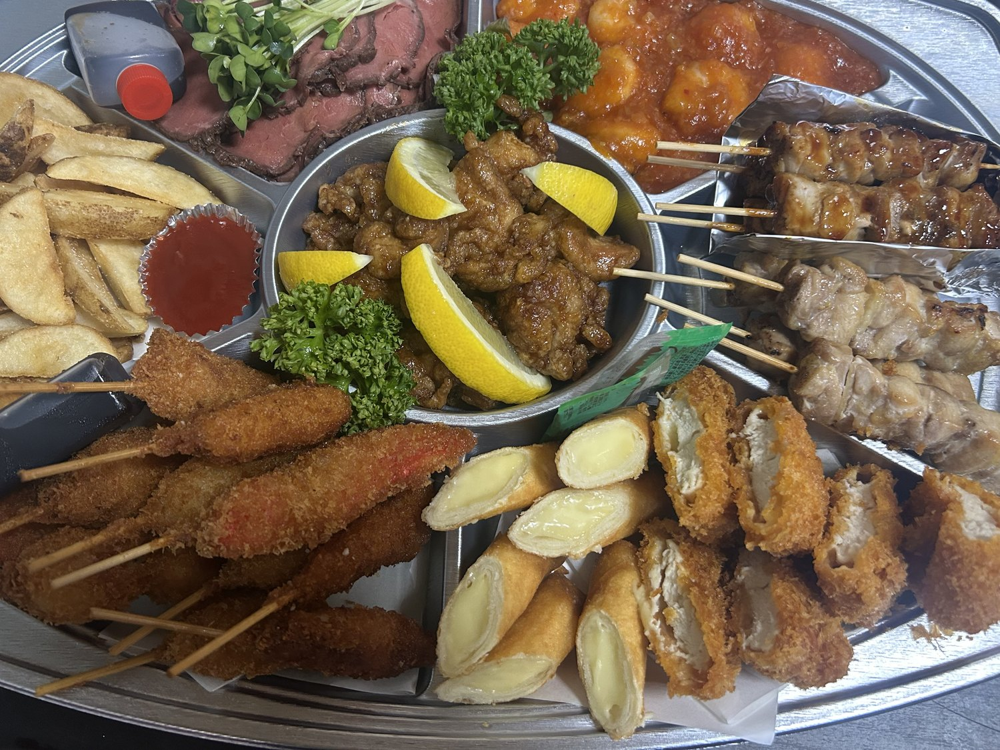
お料理のこと
お造り、揚げもの、お鍋、お食事。ご宴会のお料理は、大皿に盛り合わせてお出ししております。
お席のこと
4名様の個室から、120名様の宴会場まで。人数に合わせてお部屋をご用意いたします。
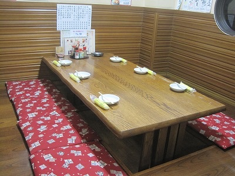
4名様から20名様まで、人数に応じてご用意いたします。
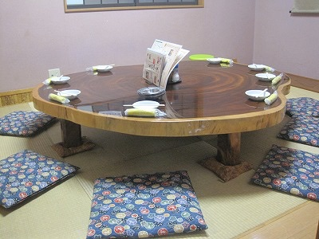
足を伸ばして、ゆっくりお座りいただけます。
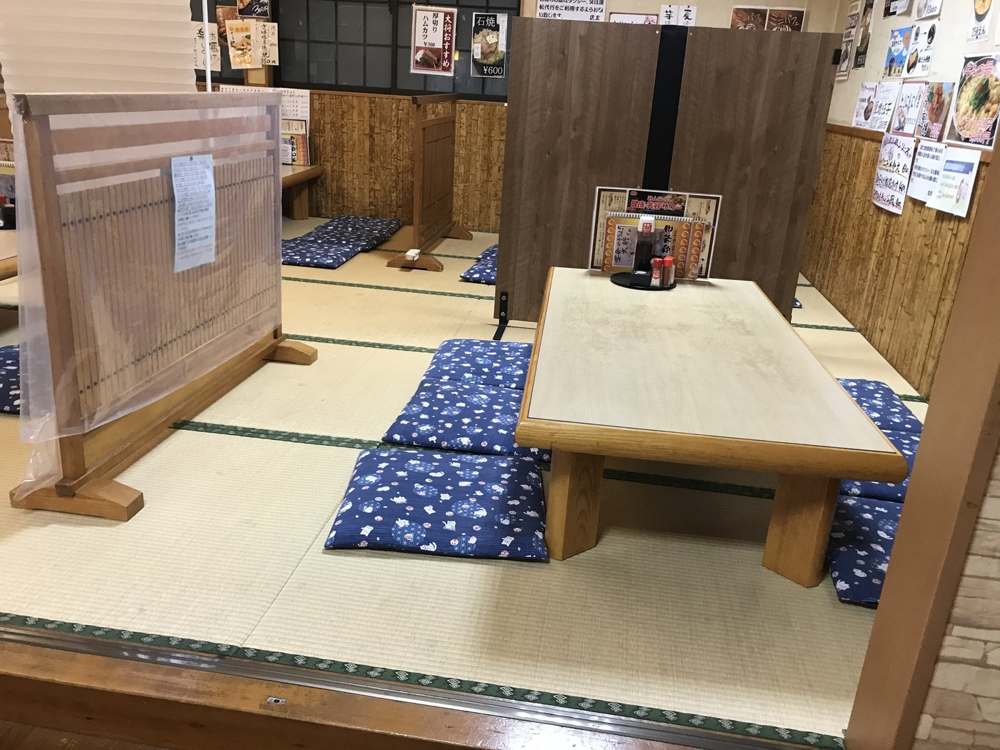
衝立で仕切った座卓で、周りを気にせずお過ごしいただけます。
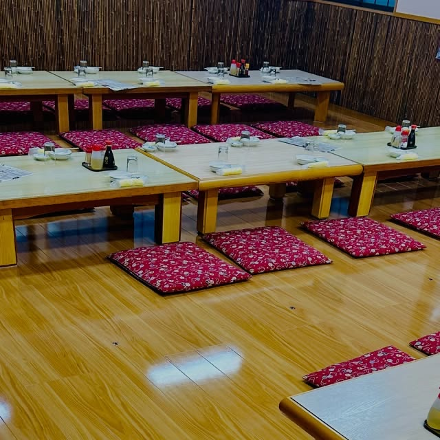
2026年8月、座敷からフローリングへ改装いたしました。
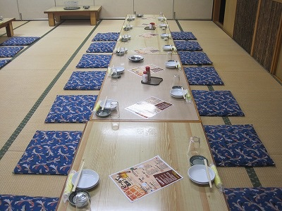
座布団を並べた大広間で、大人数のご宴会を承ります。
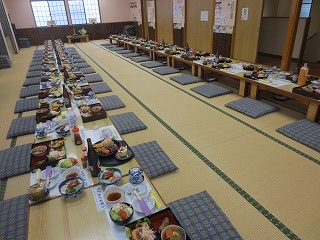
最大120名様まで、お膳をご用意いたします。
このほか、厨房が見える寿司カウンターのお席もございます。お一人様・お二人様でもどうぞ。
ご宴会のお料理とご予算は、人数に合わせてご相談を承ります。
送迎バスのこと
白と水色のバスで、皆様をお迎えにあがります。
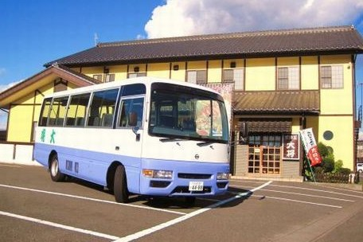
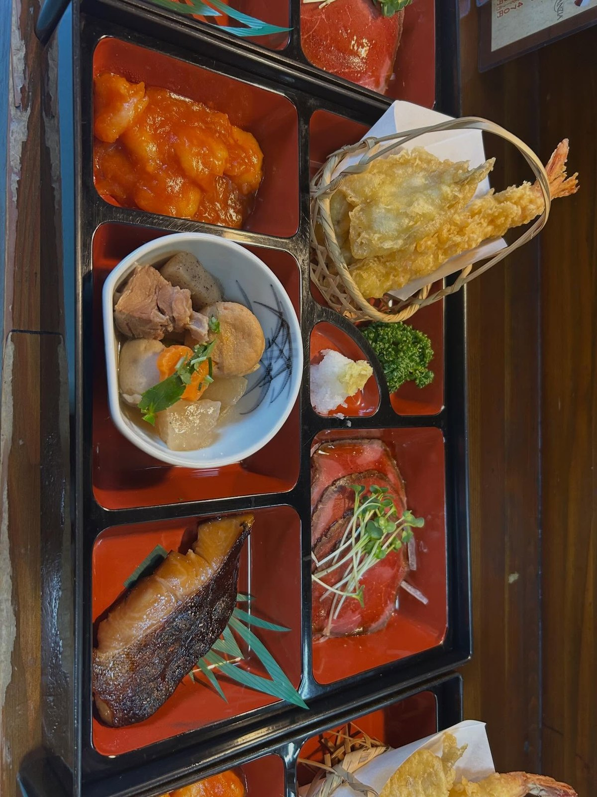
慶びの席と、お別れの席
折詰めのお料理で、法事のお集まりから慶事のお祝いまで承っております。お昼のお時間でもご利用いただけます。
個人盛りコース
5,000円〜（税込）
人数・ご予算・送迎についても、あわせてご相談いただけます。
お電話でご相談くださいお持ち帰りとお弁当
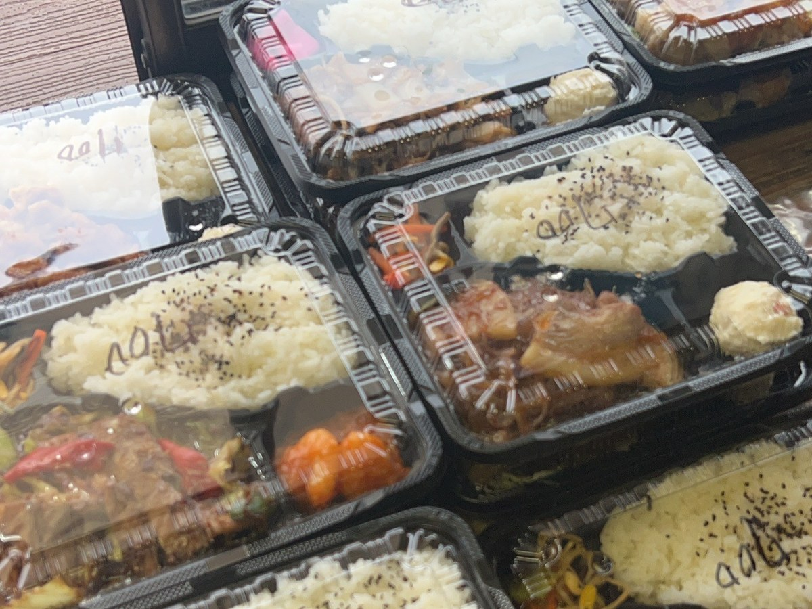
お弁当650円〜、お味噌汁200円〜でご用意しております。店内ではなく、店舗横のプレハブ小屋での販売です。
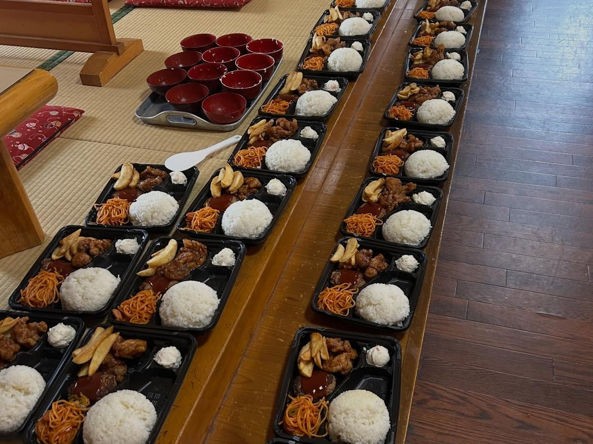
運動会や集まりなど、まとめてのご注文も承っております。土日にご注文の際は、1,000円以上のお弁当を50個からお受けしております。
夜は17:00〜19:00、おつまみ350円〜のお持ち帰りも承っております。
お客様の声
温かいお鍋が食べたくて大将さんへ 家族3人でカキ鍋を注文。お通しのおでんと締めに雑炊まで食べたのでおなかいっぱいに。
お客様の声より
初めてお邪魔しました。お刺身・麻婆豆腐オススメ！美味しかったです！
お客様の声より
生きた魚をさばいてお刺身にしてくれるから、新鮮で美味しい！
お客様の声より
量が多いのでたくさん食べる男性にはいいですね！毎回お通しが楽しみだったりします
お客様の声より
| 住所 | 〒306-0231 茨城県古河市駒羽根1502-2 |
|---|---|
| 電話 | 0280-92-4488 |
| 営業時間 | 16:00〜22:00（土曜のみ16:00〜23:00） お持ち帰りは店舗横のプレハブ小屋にて、昼11:30〜13:00・夜17:00〜19:00 法事・慶事のお集まりは、ご予約にてお昼から承ります |
| 定休日 | 月曜日・火曜日 |
| 送迎 | 10名様以上で無料送迎バスを出しております（ご予約時にご相談ください） |
| 席数 | 200席（宴会場は最大120名様まで） |
| 駐車場 | あり |
| お支払い | 現金、PayPay・d払い・au PAYのQRコード決済（クレジットカード・電子マネーはご利用いただけません） |